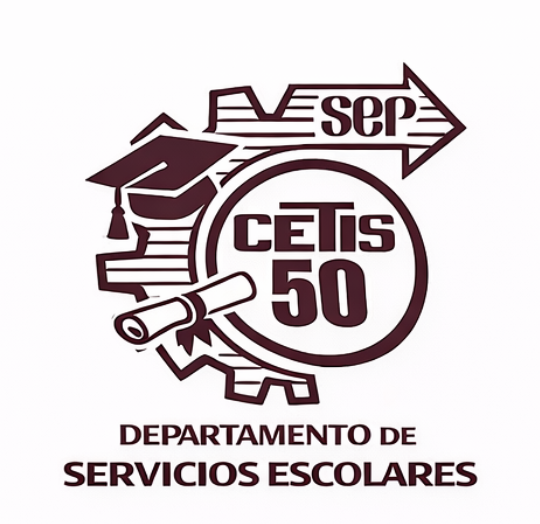
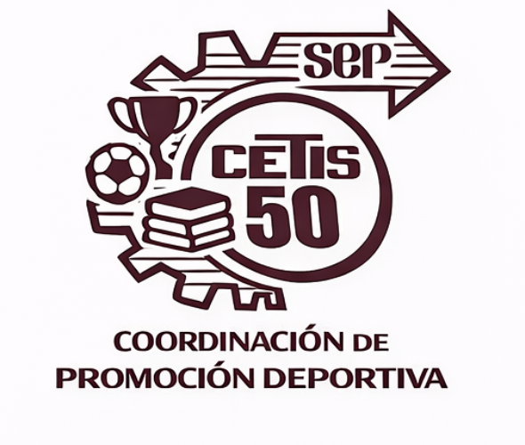
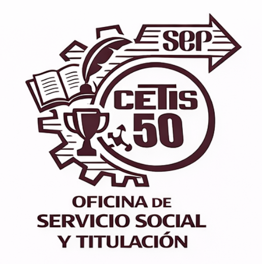
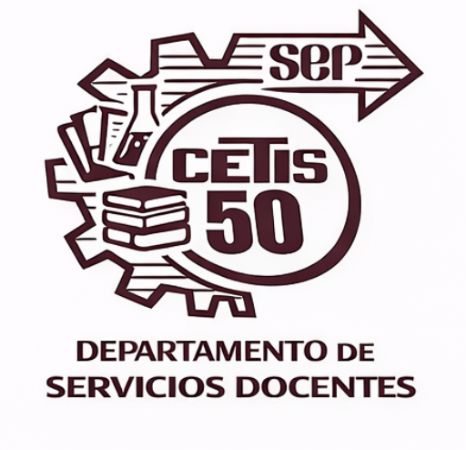

Departamentos
Consulta las funciones de cada departamento y oficina que fortalecen la vida académica y administrativa del plantel.

Departamento de Servicios Escolares
- Organizar y supervisar las actividades de extensión educativa y control escolar conforme a la normatividad vigente.
- Apoyar a la Subdirección en la elaboración del programa anual de operación.
- Elaborar y presentar la estructura educativa del plantel en coordinación con Planeación y Evaluación.
- Difundir y vigilar el cumplimiento de reglamentos, políticas y procedimientos institucionales.
- Coordinar y supervisar actividades de promoción deportiva y difusión cultural.
- Coordinar y supervisar la prestación del servicio social y titulación de los alumnos.
- Supervisar estudios socioeconómicos para el otorgamiento de becas.
- Coordinar y supervisar el otorgamiento de becas conforme a la normatividad vigente.
- Supervisar la prestación de los servicios bibliotecarios del plantel.

Coordinación de Promoción Deportiva
- Planear y presentar el programa de actividades y necesidades de la coordinación ante Servicios Escolares.
- Organizar eventos deportivos y recreativos que contribuyan a la formación integral del alumnado.
- Fomentar la participación de la comunidad escolar en actividades deportivas del plantel.
- Impulsar el intercambio deportivo entre el plantel, la comunidad y otras instituciones.
- Programar y supervisar el uso de las instalaciones deportivas del plantel.
- Organizar e integrar los clubes deportivos y coordinar sus actividades.
- Asesorar a los alumnos en la realización de actividades deportivas del plantel.
- Promover la participación comunitaria en el mantenimiento y conservación de instalaciones deportivas.
- Proporcionar información requerida por Servicios Escolares en tiempo y forma.
- Apoyar las actividades de promoción del plantel para la captación de alumnos de nuevo ingreso.
- Mantener comunicación con las demás áreas del plantel para el adecuado desempeño de funciones.

Oficina de Servicio Social y Titulación
- Planear y presentar el programa de actividades y necesidades de la oficina ante Servicios Escolares.
- Gestionar convenios con el sector productivo para la prestación del servicio social.
- Coordinar y supervisar el cumplimiento del servicio social por parte del alumnado.
- Elaborar programas e instructivos para la realización del servicio social.
- Proporcionar a los alumnos la normatividad de las instituciones donde realizan el servicio social.
- Programar y evaluar las actividades de los docentes responsables del servicio social e informar a Servicios Escolares.
- Realizar gestiones administrativas del servicio social, así como su registro y control.
- Expedir constancias de servicio social a los alumnos del plantel.
- Asesorar a los alumnos en las opciones de titulación y en la elección del tema de tesis.
- Registrar y controlar los temas de tesis y las distintas opciones de titulación.
Oficina de Control Escolar
- Gestionar los procesos de inscripción, reinscripción, acreditación, certificación y titulación de los alumnos.
- Elaborar y presentar el programa de actividades y necesidades de la oficina.
- Verificar que la documentación de los alumnos cumpla con los requisitos establecidos.
- Integrar y resguardar los expedientes de control escolar de los alumnos.
- Mantener actualizado el registro de alumnos y sus evaluaciones.
- Elaborar y distribuir listados de materias y grupos al personal docente.
- Integrar y reportar información de control escolar conforme a los calendarios oficiales.
- Legalizar la documentación escolar del alumnado cuando sea requerido.
- Apoyar en la difusión y control de documentación para el otorgamiento de becas.
- Informar a las autoridades sobre casos que ameriten otorgamiento o suspensión de becas.
- Aclarar incongruencias en el registro de calificaciones.
Departamento de Vinculación con el Sector Productivo
- Organizar, coordinar y supervisar las actividades de vinculación entre la educación tecnológica y el sector productivo.
- Elaborar y proponer el programa anual de vinculación a la Subdirección.
- Integrar y presentar el cuadro de necesidades de recursos humanos, financieros y materiales del departamento.
- Realizar diagnósticos socioeconómicos del área de influencia del plantel para priorizar necesidades de bienes y servicios.
- Participar en la celebración y seguimiento de convenios de vinculación con el sector productivo regional.
- Solicitar la participación del personal docente y administrativo requerido para las acciones de vinculación.
- Participar en programas de capacitación y actualización del personal encargado de la vinculación.
- Mantener coordinación con instituciones y dependencias relacionadas con el sector productivo de la región.
- Apoyar el desarrollo de prácticas profesionales y la prestación del servicio social de los alumnos.
- Registrar y dar seguimiento al avance de los proyectos de vinculación del plantel.

Departamento de Servicios Docentes
- Organizar y supervisar la aplicación de planes y programas de estudio, así como el control de avances académicos.
- Apoyar a la Subdirección en la elaboración del programa anual de operación.
- Integrar y presentar las necesidades de recursos humanos al inicio de cada semestre.
- Elaborar y presentar la estructura educativa del plantel en coordinación con Planeación y Evaluación.
- Integrar y actualizar el banco de programas de estudio del plantel.
- Elaborar los programas y horarios de trabajo del personal docente y técnico a su cargo.
- Orientar al personal docente en técnicas y métodos de enseñanza-aprendizaje.
- Coordinar y supervisar el funcionamiento de las academias de maestros.
- Integrar y presentar propuestas de adecuación a los planes y programas de estudio.
- Realizar los exámenes extraordinarios junto con los docentes del plantel.